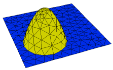
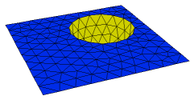

|
regional_surfaces |

  
|
|
regional_surfaces |
|
{ REGIONAL_SURFACES.PDE
This problem demonstrates the use of regional definition of 3D extrusion surfaces.
There are three "REGIONS" defined, the cubical body of the domain, and two circular
patches. The circular patches each exist only on a single surface, and in no volumes.
The patch regions are used to define alternate extrusion surface shapes, and
insert two parabolic depressions in the top and bottom faces of the cube.
Click "Domain Review" to watch the gridding process.
}
title 'Regional surface definition'
coordinates cartesian3
variables Tp
definitions long = 1 { domain size } wide = 1 z1 = -1 { bottom surface default shape } z2 = 1 { top surface default shape } xc = wide/3 {some locating coordinates } yc = wide/3 rc = wide/2 h = 0.8
K = 1 { heat equation parameters } Q = exp(-(x^2+y^2+z^2))
initial values Tp = 0.
equations Tp: div(k*grad(Tp)) + Q = 0
extrusion z = z1,z2
boundaries surface 1 value(Tp)=0 surface 2 value(Tp)=0
{ define full domain boundary in base plane } Region 1 start(-wide,-wide) value(Tp) = 0 line to (wide,-wide) to (wide,wide) to (-wide,wide) to close
Limited region 2 { redefine bottom surface shape in region 2 } |
 
|
{ note that this shape must meet the default shape at the edge of the region }
z1 = -1+h*(1-((x+xc)^2+(y+yc)^2)/rc^2) { a parabolic dent }
surface 1 { region exists only on surface 1 }
start(-xc,-yc-rc) arc(center=-xc,-yc) angle=360
Limited region 3
{ redefine top surface shape in region 3 }
{ note that this shape must meet the default shape at the edge of the region }
z2 = 1-h*(1-((x-xc)^2+(y-yc)^2)/rc^2)
surface 2 { region exists only on surface 2 }
start(xc,yc-rc) arc(center=xc,yc) angle=360
plots
grid(x,y,z)
contour(Tp) on x=y
end
Page url: index.html?usage_3d_domains_regional_surfaces.html